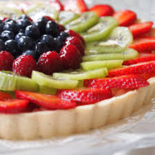

How to Make A Huge Fruit Tart:

An original recipe by Sanya Nadeem.
This recipe will make one of the biggest and tastiest fruit tarts you have ever
tasted! Each bite has fruit filled goodness with a yummy crust layer and delicious
vanilla filling. Believe me, you will not be sorry once you get a load of these!
Each recipe I have chosen for this site will for sure be some of the best your
family has ever tasted, maybe even better than professional bakeries! For more recipes like
these, click here.Are you ready to make one of the
most delicious pastries ever?
Ingredients: (makes 1 fruit tart)
Directions:
- Preheat the oven to 350 degrees F.
- For the crust: In a food processor, combine the confectioners' sugar,
flour, and butter, and process until the mixture forms a ball. With your
fingers, press the dough into a 12-inch tart pan with a removable bottom,
taking care to push the crust into the indentations in the sides. Pat
until the crust is even. Bake for 10 to 12 minutes, until very lightly
browned. Set aside to cool.
- For the filling and topping: Beat the cream cheese, sugar, and vanilla
together until smooth. Spread over the cooled crust. Cut the strawberries
into 1/4-inch slices and arrange around the edge of the crust. For the next
circle, use kiwi slices. Add another circle of strawberries, filling in any
spaces with blueberries. Cluster the raspberries in the center of the tart.
- For the glaze: Combine the limeade, cornstarch, lime juice, and sugar in a
small saucepan and cook over medium heat until clear and thick, about 2 minutes.
Let cool. With a pastry brush, glaze the entire tart. You will not use all
of the glaze.
- Keep the tart in the refrigerator. Remove about 15 minutes before serving.
Slice into 8 wedges and serve with a dollop of whipped cream. Now, get
ready to bite into the most fresh and delicious dessert you have ever had!
Any Feedback or Questions:
Click here.